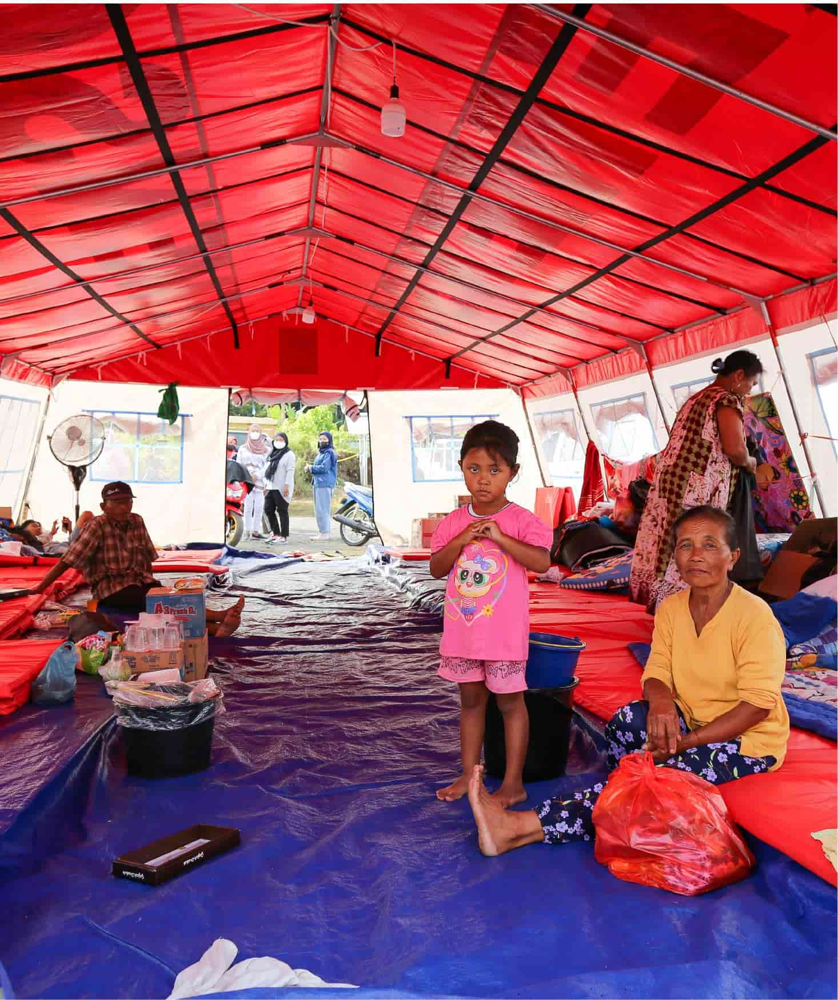

United Nations In Indonesia
Country Results Report 2021
Vulnerable Communities Better Prepared for
Climate Change and Disasters

In his address to the UN General Assembly in September, UN Secretary-General António Guterres said the world was at an inflection point, in which COVID-19 should serve as a wakeup call to mobilize global responses to the triple crisis of climate change, biodiversity loss and pollution destroying our planet.
The fallout of this triple crisis will be universal, but as with COVID-19 it will hit disadvantaged groups the hardest. Indonesia is home to 65 million young people, and the UN has been instrumental in ensuring policy takes their needs into account. In 2021, the UN engaged with the Government and groups representing young people to raise awareness of child-centered climate and environmental actions, and to advocate for the mainstreaming of child-focused climate and environment policies across all sectors. For example, the UN initiated a climate landscape analysis for children and engaged in advocacy on child-sensitive climate and environmental actions in the WASH and health sectors.
The speed at which COVID-19’s Delta variant tore through Indonesia in summer 2021 and the emergence of the Omicron variant in December underscores the need for continued vigilance to halt the spread of the pandemic. The UN’s RESTORE project assisted nine local governments in formulating COVID-19 post-disaster needs assessments, contingency, and recovery plans. In accordance with these assessments, the UN provided medical equipment to strengthen the capacity of hospitals to handle iterative COVID-19 surges. This intervention significantly improved the capacity of the nine targeted local governments to plan their COVID-19 recovery programs and will serve as a model for the scale-up of the interventions in 2022.
But scientists are clear COVID-19 will not be the last pandemic the world faces—and governments must build on the lessons of 2020 to ensure they are prepared for the next outbreak. In this context, the UN collaborated with the Ministry of Health in 2021 on the development of a training module to strengthen public health emergency preparedness capacities at hospitals and community health centres, and to mitigate the risk of the emergence or re-emergence of high-threat pathogens. This included extensive support of the Ministry of Health’s contact tracing capacity, including on-the-job training for staff across 19 provinces on the use of a digital tracing application that resulted in 35,000 people being registered as contact tracers. It also included the establishment of contact tracing centers at the national, province and district level. Furthermore, the UN supported the establishment of sentinel surveillance for Influenza- Like Illnesses/Severe Acute Respiratory Infections (ILI/ SARI), including the development of a training module on joint risk assessment and control. The UN also contributed to guidelines for pilot legionellosis sentinel surveillance in Bali. Finally, the UN supported the establishment of a zoonosis information system for the Ministry of Health, covering priority zoonotic diseases such as avian influenza, leptospirosis, rabies, anthrax, and Nipah virus.
The UN also built on ongoing support for the Ministry of Health’s strengthening of the core capacities of International Health Regulations (IHR), an international legal instrument formulated in 2005 that covers measures for preventing the transnational spread of infectious diseases. In 2021, that included the development of a resource mapping tool tailored to the Indonesian context, which links national priorities for health security based on the national plan with potential resources and identifies needs gaps in the system that require attention.
At the level of community resilience to the impacts of disasters, the UN continues to support the capacity of community-based volunteers known as TAGANA, who serve under the Ministry of Social Affairs. Through the Ministry of Social Affairs-led Capacity Building Technical Working Group, the UN supported virtual training for 652 TAGANA volunteers in the wake of Cyclone Seroja in April 2021 and the Ile Lewotolok volcano eruptions in NTT in 2020, with a particular focus on logistics and shelter. The UN also partnered with the International Federation of Red Cross and Red Crescent Societies to develop online training modules for TAGANA that emphasise the principle of inclusion in humanitarian assistance, such as gender-inclusive practices in the provision of clean water, sanitation, and environmental health facilities. The framework equips TAGANA to implement a referral mechanism for survivors of gender-based violence and has been adopted and implemented by two provinces to date, namely East Nusa Tenggara and Banten.
The UN is also working to ensure meaningful adolescent participation in disaster preparedness, response, and recovery planning and action. These efforts include supporting school safety guidance and curricula, providing post-disaster school tents, and “School-in- a-Box” kits and offering emergency response training that includes addressing psychosocial concerns. Meanwhile, in May 2021, the UN and Indonesia’s Disaster Management Agency launched a “hackathon” competition, inviting talented developers to contribute innovative ideas and solutions to the agency’s digital InaRISK platform and help improve the country’s preparedness for disasters.